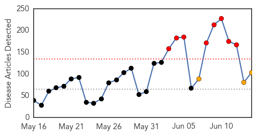
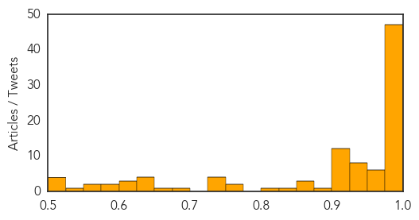
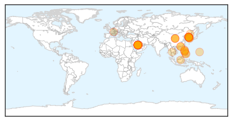
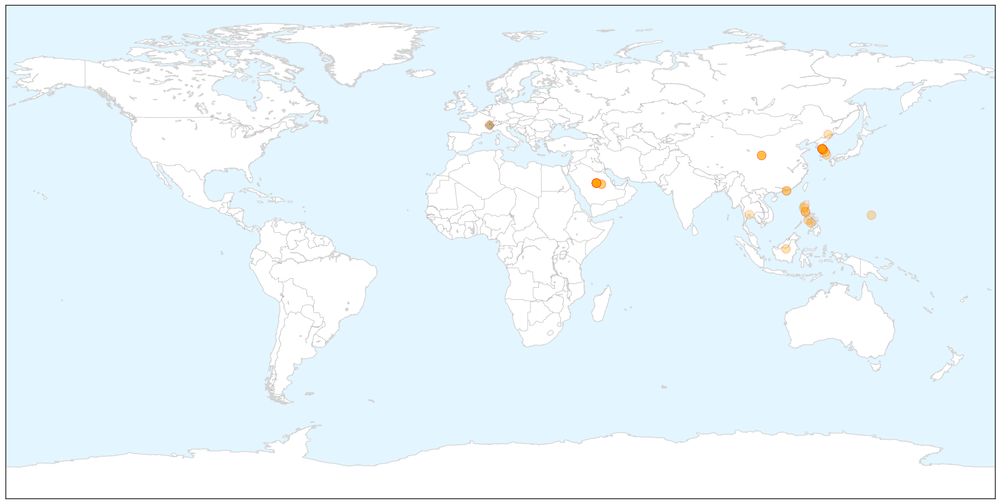

Unknown
30-Day Web Trend
8 alerts, 3 warnings

30-Day Twitter Trend
6 alerts, 1 warnings

Article Locations


Article Confidences
Top Articles:
- 1.000
- S Korea MERS virus outbreak ‘large and complex’: WHO
- 1.000
- SKorea MERS virus outbreak ‘large and complex’, says World Health Organisation
- 0.999
- Seven More MERS Cases Reported In South Korea
- 0.999
- South Korea reports seven new MERS cases
- 0.999
- Death toll from MERS outbreak in South Korea hits 14
- 0.999
- S. Korea, WHO experts downplay pandemic potential of MERS
- 0.999
- WHO plans emergency meeting as S. Korea MERS cases reach 145 — RT News
- 0.999
- Why MERS Is Likely To Crop Up Outside The Middle East Again
- 0.998
- S Korea shuts top hospital to stem MERS outbreak
- 0.997
- One more S. Korean dies of MERS, death toll up to 15
- 0.997
- MERS-hit top hospital partially closed
- 0.997
- Seven new MERS cases diagnosed in South Korea
- 0.997
- Xinhua Insight: China steps up MERS alert - Xinhua
- 0.997
- S Korea reports 15th MERS death, seven new cases - Kuwait Times
- 0.997
- S. Korea reports 15th MERS death, seven new cases (Update)
- 0.996
- South Korea reports 15th MERS death along with seven new cases Seoul
- 0.996
- S. Korea MERS death toll at 15 with 7 new cases
- 0.996
- MERS infections in S. Korea rise to 145, Samsung hospital closed - Xinhua
- 0.995
- South Korea reports 15th MERS fatality, seven new cases
- 0.995
- South Korea reports seven new MERS cases
- 0.995
- WHO: MERS outbreak 'large and complex' in South Korea
- 0.994
- Experts downplay MERS fears
- 0.994
- (3rd LD) One more S. Korean dies of MERS, death toll up to 15
- 0.994
- S. Korea reports 7 more MERS cases, bringing total to 145
- 0.994
- (2nd LD) S. Korea reports 7 more MERS cases, bringing total to 145
- 0.993
- Hospitals are the main source of rise in MERS cases
- 0.993
- Stay alert on Mers virus, HK experts warn after returning from South Korea
- 0.992
- S.Korean man thought to have MERS hospitalised in Slovakia
- 0.992
- South Korea reports 15th MERS death, 7 new cases
- 0.992
- S.Korean man thought to have MERS hospitalized in Slovakia
- 0.992
- MERS outbreak in Korea may be past its peak, panel says
- 0.991
- S. Korea reports 7 more MERS cases, bringing total to 145
- 0.990
- Saudi health experts to visit South Korea amid MERS crisis
- 0.989
- S Korea reports 15th MERS death
- 0.989
- South Korean thought to have MERS hospitalised in Slovakia – BorneoPost Online
- 0.989
- S Korea reports 15th MERS death
- 0.989
- South Korea’s response to MERS cases is faulted
- 0.988
- Mers death toll hits 15 in S. Korea; 145 infected, East Asia News & Top Stories
- 0.987
- South Korea’s response to MERS cases is faulted
- 0.987
- MERS infections in S. Korea rise to 145, Samsung hospital closed
- 0.986
- College Shut for a Week After Infection Scare
- 0.983
- Samsung forced to partially close-INSIDE Korea JoongAng Daily
- 0.982
- SKorean MERS outbreak feared to have travelled outside
- 0.979
- MERS export risks reduced
- 0.979
- One Hospital in Seoul Shut down for Becoming New Center of MERS Outbreak
- 0.977
- Hospital closes door to to try to stop spread of MERS
- 0.976
- 12 additional cases of #MERS reported bringing total number of cases in #outbreak to 138
- 0.972
- Florida Beach Goers Beware! Flesh-Eating Cannibal Like Bacteria Claims Two Lives
- 0.970
- World Health Organization Calls Emergency Meeting on 'Large, Complex' South Korea MERS Outbreak
- 0.969
- Slovakia treats new MERS case
Showing top 50 articles...
Top Tweets:
-
No tweets found for Jun 14, 2015
MERS
30-Day Web Trend
24 alerts, 2 warnings

30-Day Twitter Trend
6 alerts, 0 warnings

Article Locations

X

Article Confidences

Top Articles:
- 1.000
- MERS Forces Limited Operations at Seoul Hospital
- 1.000
- Nigeria on alert over Middle East respiratory syndrome
- 1.000
- 14th person dies of MERS in S. Korea; 2 hospitals closed – The Korea Times
- 1.000
- S. Korea to See More MERS Cases
- 1.000
- Experts expect more MERS cases, downplay chance of pandemic
- 1.000
- Filipino female nurse PH’s 1st MERS case; DOH tracking contacts
- 0.999
- Health officials: MERS virus not spreading outside South Korean hospitals
- 0.999
- MERS may have reached Europe as death toll hits 15 since South Korea diagnosis
- 0.999
- South Korea hospital 'is source of many Mers cases'
- 0.999
- Experts downplay MERS crisis; S. Korea records 14th death
- 0.999
- MERS: Seoul hospital at centre of South Korean outbreak suspends services; death toll now at 15
- 0.999
- MERS virus claims 15 lives in South Korea
- 0.999
- MERS panic ‘unnecesary’
- 0.999
- Korean ‘MERS epicenter’ suspends service
- 0.999
- The World Health Organization Concerned About Propagation of the Coronavirus in Korea
- 0.998
- WHO calls emergency meeting on "large, complex" S. Korea MERS outbreak
- 0.998
- Kingdom South Korea see no MERS letup
- 0.998
- [Editorial] Info sharing crucial
- 0.998
- New MERS death reported in South Korea
- 0.998
- New #MERS death reported in South Korea
- 0.998
- (7th LD) WHO says MERS in S. Korea 'large and complex'
- 0.998
- Hospital at center of South Korea's MERS outbreak suspends services; 7 new cases
- 0.997
- 6th person dies of MERS virus in South Korea - Northwest Asian Weekly
- 0.997
- South Korea Reports Seven New Cases of MERS, Brings Total to 145
- 0.996
- 'MERS-CoV' Infection
- 0.996
- WHO: MERS-Cov has not mutated, but Korea outbreak seen to worsen
- 0.996
- 15th person dies from MERS in S. Korea, 7 new cases reported- Nikkei Asian Review
- 0.995
- Another Pinoy with MERS in Riyadh
- 0.995
- South Korea Confirms Seven More MERS Cases as Economy Suffers
- 0.993
- ‘Woman who escaped from Miri Hospital not MERS-CoV suspect’ – BorneoPost Online
- 0.988
- The Manila Times Online
- 0.981
- KUAM.com-KUAM News: On Air. Online. On Demand.
- 0.977
- Embassy in Riyadh says Pinoy has MERS virus
- 0.976
- Hospitals in PH unprepared for possible outbreak
- 0.972
- More tests needed to rule out MERS for S.Korean man in Slovakia
- 0.967
- S. Korea reports 11th death from MERS outbreak[2]- Chinadaily.com.cn
- 0.964
- Tests show South Korean in Slovakia probably does not have MERS
- 0.959
- Tests show South Korean in Slovakia probably does not have MERS
- 0.934
- Joint team faults gov’t information handling-INSIDE Korea JoongAng Daily
- 0.923
- China's Aviation Regulator Orders Enhanced MERS Control
- 0.890
- Hospitals told to be on alert vs MERS-CoV
- 0.859
- Slovakian hospital tests South Korean man in suspected Mers case
- 0.791
- Officials and traders in Suvarnabhumi Airport meet to ensure synchronized action against MERS
Top Tweets:
- 0.643
- WHO Director-General is convening the 9th Meeting of the Emergency Committee on MERS-CoV under International Health Regulations on 16 June